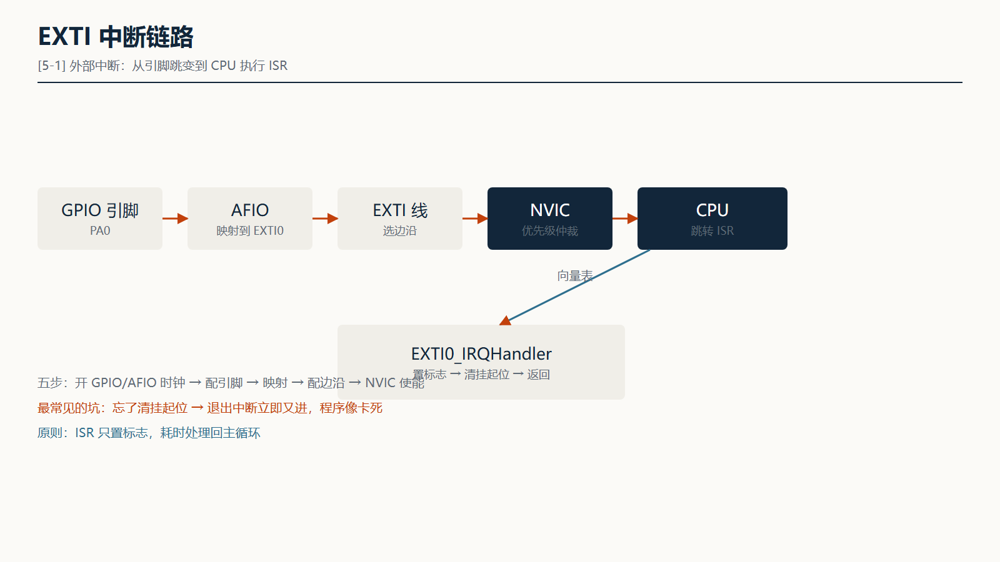

课程时长：约 42 分钟 | 深度版 | 配套结构图与看图理解
从“轮询”跨到“事件驱动”。这是嵌入式实时性的起点：CPU 不再傻等，而是让硬件在事件发生时叫它。
中断也是后面 RTOS 的基础：任务切换、信号量唤醒，底层都是中断。
说清中断响应全过程
掌握 NVIC 优先级分组
独立配置一条 EXTI 中断
理解“中断只置标志”的原则

图 8 EXTI 中断链路：引脚 → AFIO 映射 → EXTI 线 → NVIC → CPU
顺着箭头走：引脚跳变 → AFIO 映射到某条 EXTI 线 → EXTI 按设定边沿产生请求 → NVIC 按优先级排队 → CPU 保存现场跳进 ISR。
图里 ISR 框写的是“置标志、清挂起、返回”，这就是最短路径。最常见错误是漏掉“清挂起”：中断返回后请求仍在，立刻又进，主程序几乎不跑。
外设请求 → NVIC 排序 → CPU 自动压栈（R0–R3、R12、LR、PC、xPSR）→ 查向量表跳转 → 执行 ISR → 恢复现场返回。
整个过程硬件完成，软件只需写 ISR 并在返回前清标志。
| 概念 | 含义 | 注意 |
|---|---|---|
| 抢占优先级 | 可打断低优先级的 ISR | 数值越小越高 |
| 子优先级 | 同时挂起时的顺序 | 不能互相打断 |
| 分组 | 决定几个 bit 给抢占 | 全工程只能用一种 |
| 数值范围 | F1 为 4 位，0–15 | 0 最高 |
RCC_APB2PeriphClockCmd(RCC_APB2Periph_GPIOB | RCC_APB2Periph_AFIO, ENABLE); GPIO_InitTypeDef g; g.GPIO_Pin = GPIO_Pin_1; g.GPIO_Mode = GPIO_Mode_IPU; GPIO_Init(GPIOB, &g); GPIO_EXTILineConfig(GPIO_PortSourceGPIOB, GPIO_PinSource1); EXTI_InitTypeDef e; e.EXTI_Line = EXTI_Line1; e.EXTI_Mode = EXTI_Mode_Interrupt; e.EXTI_Trigger = EXTI_Trigger_Falling; e.EXTI_LineCmd = ENABLE; EXTI_Init(&e); NVIC_PriorityGroupConfig(NVIC_PriorityGroup_2); NVIC_InitTypeDef n; n.NVIC_IRQChannel = EXTI1_IRQn; n.NVIC_IRQChannelPreemptionPriority = 1; n.NVIC_IRQChannelSubPriority = 1; n.NVIC_IRQChannelCmd = ENABLE; NVIC_Init(&n);
void EXTI1_IRQHandler(void)
{
if (EXTI_GetITStatus(EXTI_Line1) != RESET)
{
key_flag = 1; /* 只置标志 */
EXTI_ClearITPendingBit(EXTI_Line1); /* 必须清 */
}
}
ISR 越短越好：执行期间同级与低优先级中断被延迟
不在 ISR 里延时、打印、malloc
共享变量加 volatile
中断与主程序不抢同一外设
用标志/队列把处理搬到主循环
为什么要 AFIO：F103 有上百个引脚，但 EXTI 只有 16 条线。AFIO 负责把“某端口第 n 号引脚”接到“第 n 条线”，同一时刻只能接一个。
优先级分组的本质是“把 4 位优先级切成两段”：分组 2 表示 2 位抢占（0–3）+ 2 位子优先级（0–3）。
例：分组 2 时，抢占 0–3、子优先级 0–3。若 A 抢占 1、B 抢占 0，B 可打断 A；两者抢占相同则比较子优先级，但不会互相打断。
中断延迟估算：压栈 12 个周期 + 取向量 + 跳转，72MHz 下约 0.3µs，远小于一次函数调用。
| 错误写法 | 后果 | 正确做法 |
|---|---|---|
| 忘清挂起位 | 反复进中断，主程序不跑 | ISR 末尾清除 |
| 只开 EXTI 不开 AFIO 时钟 | 映射静默失效 | 补 AFIO 时钟 |
| 分组在运行中反复改 | 优先级行为混乱 | 启动时设一次 |
| ISR 里 Delay 或 printf | 系统卡顿、死锁 | 只置标志 |
AFIO 存在的意义：引脚数远多于 EXTI 线数（F103 只有 16 条），必须用 AFIO 把“某端口的第 n 号引脚”映射到“第 n 条 EXTI 线”。同一时刻 PA0/PB0/PC0 只能有一个接到 EXTI0。
为什么必须清挂起位：EXTI 请求是锁存的，不清就一直有效。ISR 返回后 NVIC 看到请求仍在，立刻再次进入，表现为程序卡在中断里。
按键触发计数，串口打印确认没有重复触发
在 ISR 里翻转 GPIO，示波器测中断频率
注释掉清挂起位，观察卡死现象
| 现象 | 原因 | 解决 |
|---|---|---|
| 一进中断就卡死 | 没清挂起位 | ISR 末尾清除 |
| 中断不进 | AFIO 时钟或 NVIC 没开 | 补时钟与 NVIC |
| 优先级不生效 | 分组设置与预期不符 | 统一分组 |
| 主循环读不到变量 | 没加 volatile | 声明为 volatile |
Q1. 中断响应保存哪些寄存器？
A：R0–R3、R12、LR、PC、xPSR。
Q2. 抢占与子优先级的区别？
A：抢占能打断 ISR，子优先级只决定同时挂起的顺序。
Q3. 为什么 ISR 不能 printf？
A：不可重入且耗时。
Q4. EXTI 线与引脚关系？
A：一条线同时只能映射一个端口的同号引脚。
Q5. 边沿触发与电平触发的区别？
A：边沿只响应跳变瞬间，电平在保持期间持续有效。
Q6. 中断优先级数值越小越高吗？
A：是，0 最高。
Q7. 中断延迟大概多少？
A：压栈与跳转约十几个周期，72MHz 下亚微秒级。
Q8. 同一条 EXTI 线能接两个引脚吗？
A：不能，同一时刻只能映射一个。
1. 配 EXTI 要先开哪个复用时钟？
答：AFIO。
2. 中断服务函数名在哪查？
答：启动文件的向量表。
3. 不清挂起会怎样？
答：反复进入中断。
4. 共享变量为什么要 volatile？
答：防止编译器优化成只读一次。
☐ 能画中断响应流程
☐ 会配 NVIC 分组
☐ 能默写五步
☐ 知道 volatile 的必要性